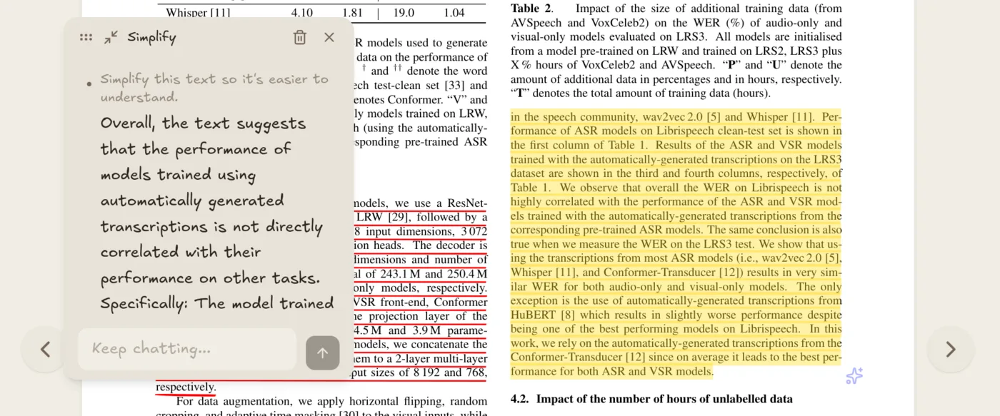
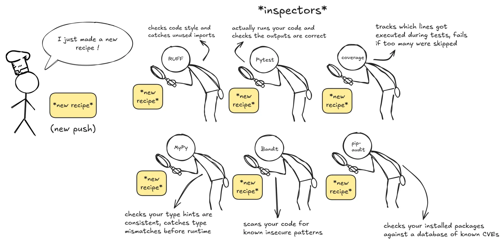
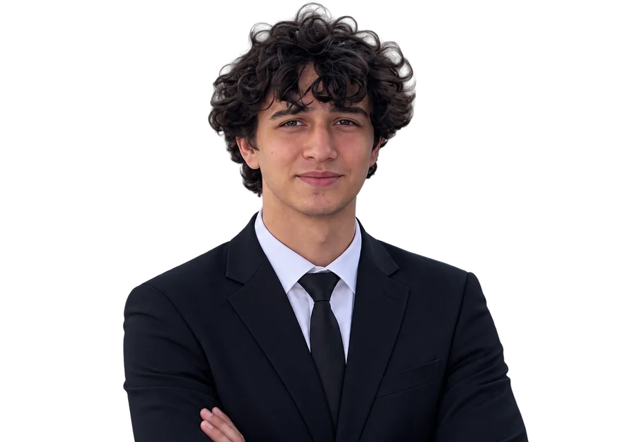
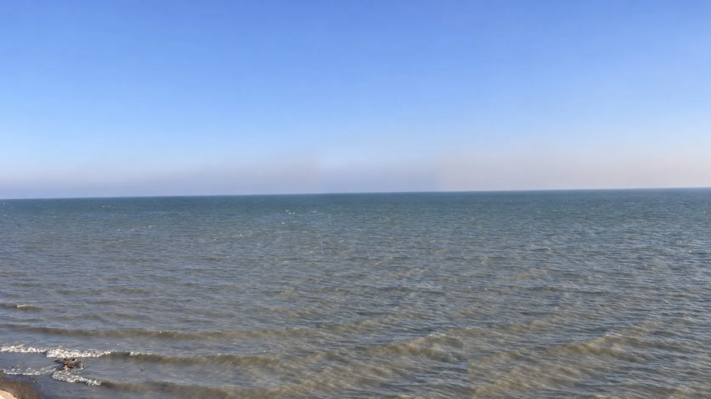
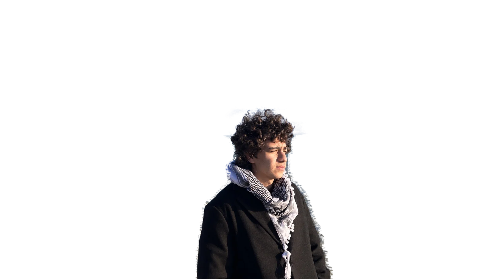

And that’s my specialty. I’ve built it over years of projects and clients, so most problems never get the chance to happen.
A model on its own is a demo. An AI system is a model wired into the place where someone is actually working, doing one useful thing without being asked twice.
ReHero is my research reader. Select a passage in a paper and the model simplifies it, answers questions about it, or reads it to you, right there in the margin. The paper never leaves the screen. See ReHero →

If I have to do something twice, the second time is a script. If a team has to do it every day, it's a pipeline.
My CI/CD setup runs six inspectors in parallel on every push: style, tests, coverage, types, security, dependencies. Pass all six and the code versions itself, builds a Docker image, and ships. I don't touch it.

Most of the value in a system is in the joints: the places where one thing has to talk to another thing that wasn't designed for it.
LipSync is a camera, a Jetson, a model, a stream and a pair of AR glasses, from four different vendors, behaving like one device. Getting that chain to hold is the job. See LipSync →
Before I write code I want to see the shape of the thing. So I built a tool that draws it for me.
Tracer reads a repository, follows the imports, class hierarchies and calls across six languages, and outputs a Mermaid diagram of how it all fits. No LLM required. It's how I start every project, including other people's. See Tracer →


